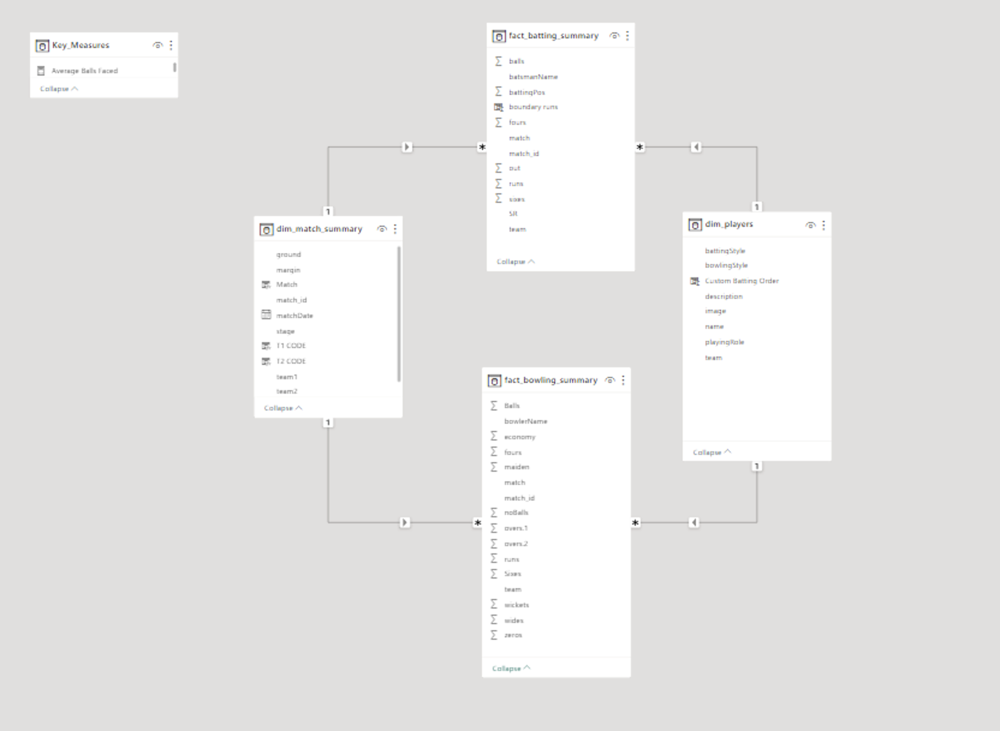
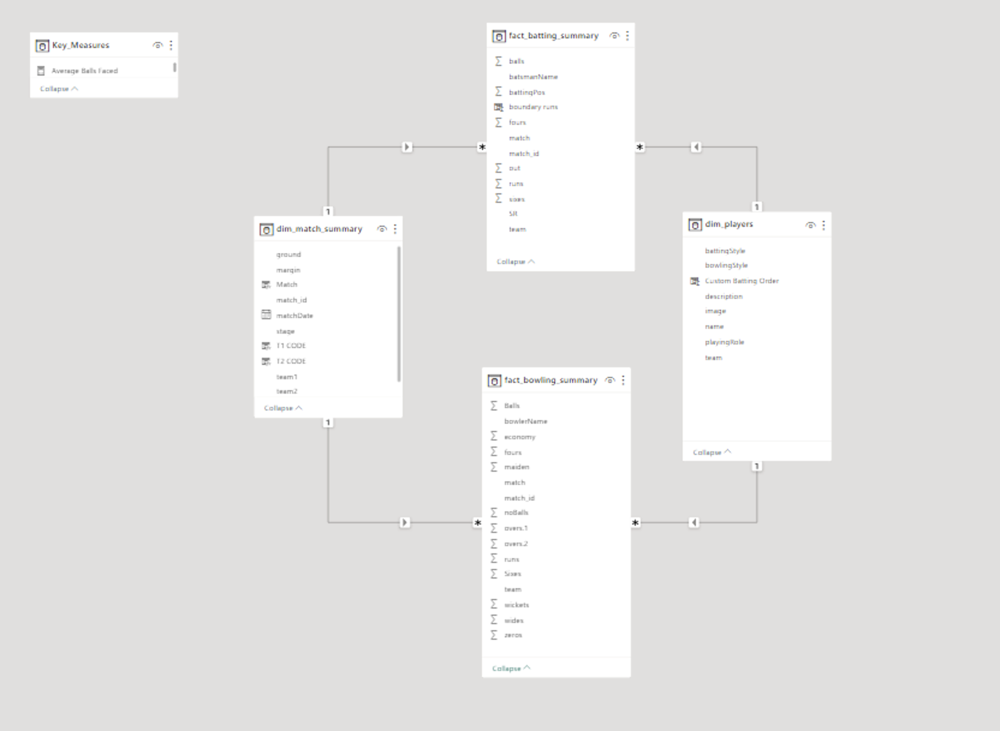

Cricket T20 World Cup 2022 Data Analysis and Strategic Team Formulation
Programming Skills
Python | JavaScript
Tools


Description
- Managed a cricket T20 World Cup (2022) data analytics project, employing Bright Data for web scraping, pandas for data manipulation, and Power BI to create interactive dashboards.
- Transformed raw data into actionable insights using pandas and visualized trends and player performances through dynamic Power BI dashboards.